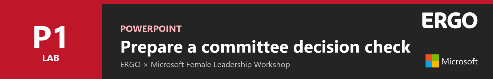

Lab P1 - Prepare a committee decision check¶

In this lab you will add a custom skill to Copilot in PowerPoint. Then you will ask for a committee readiness check in plain language. Copilot will add one clear final slide to a fictional proposal deck, without changing the original slides.
In this lab you will learn:
- Where custom skills live in Copilot in PowerPoint
- How to upload a skill and read what it tells Copilot to do
- How to ask for the task without naming the skill
- How to check the result before you rely on it
Introduction¶
Watch this short video first. It shows the whole lab from start to finish, using the real PowerPoint run. The video has on-screen captions and no sound.
Lab files
- ERGO-Skill-Decision-Before.pptx - five-slide practice deck
- ergo-decision-check.zip - the custom skill. Keep it zipped; PowerPoint reads the ZIP directly.
Exercise 1: Add the skill¶
Step 1: Open the practice deck¶
Upload ERGO-Skill-Decision-Before.pptx to your OneDrive and open it in PowerPoint for the web. Select Copilot on the ribbon to open the Copilot pane.
Read-only?
If PowerPoint opens the file read-only or shows a repair banner, select Save a copy and continue in the copy.
Step 2: Open Custom skills¶
In the Copilot pane, select … (Settings and more), then Manage plugins & skills, then Custom skills. Select Add.
You will see four options: Create manually, Upload, Record a skill and Add in OneDrive.

Step 3: Upload the skill¶
Select Upload and choose ergo-decision-check.zip. Wait until ergo-decision-check appears in the list. Make sure both Custom skills and ergo-decision-check are switched on.

Step 4: Read what the skill tells Copilot¶
Select the skill name to open it. A skill has two parts:
- Description: when Copilot should use it. Here: decision checks, committee readiness checks or pre-meeting reviews.
- Instructions: what Copilot must do. Here: add one Decision check slide with four sections, and never imply that funding is approved.

Close the skill panel when you are done.
Exercise 2: Ask Copilot¶
Step 1: Ask normally¶
Go to slide 4, which contains the proposal. Make sure Allow editing is on. Type this request, without selecting or naming the skill:
Do a committee readiness check.

Fresh file?
Before you ask, open Custom skills and wait until the skill appears and is switched on. If needed, select Refresh. In rehearsal, a request sent before the list had loaded produced a general review instead.
Step 2: Review the new slide¶
Copilot adds slide 6, Decision check.

Check that the slide contains:
- EUR 420,000, 90 days, and that funding is not yet approved
- Finance's 15% as the base case, replacing the earlier 25% estimate
- Missing owners or dates marked Not specified in the deck
- Slides 1–5 unchanged
Open the speaker notes to see the source slide numbers and reasoning.
Step 3: Ask which skill was used¶
This is optional, but useful for the group discussion.
Which custom skill did you use?

In rehearsal, Copilot answered ergo-decision-check and listed the rules it followed.
Exercise 3: Discuss as a leader¶
Ask Copilot:
Which statement would you challenge first?
Then discuss in your group:
- What does the committee still need before it can decide?
- Which review in your own team is repeated often enough to become a skill?
Troubleshooting¶
Copilot only replies in chat and does not add a slide
Turn on Allow editing, check that the file is not read-only and ask again.
Copilot gives a general review instead of the four-section slide
Open Custom skills, confirm both switches are on, select Refresh and wait for the skill to appear. Start a new chat and ask again. As a fallback, type @ergo-decision-check Do a committee readiness check.
The skill does not appear after upload
Select Refresh. Upload the ZIP as it is; do not unzip it first.
A Decision check slide already exists
The skill updates that slide instead of adding another. Use a fresh copy of the practice deck to see it create the slide.
Congratulations! You have completed Lab P1.